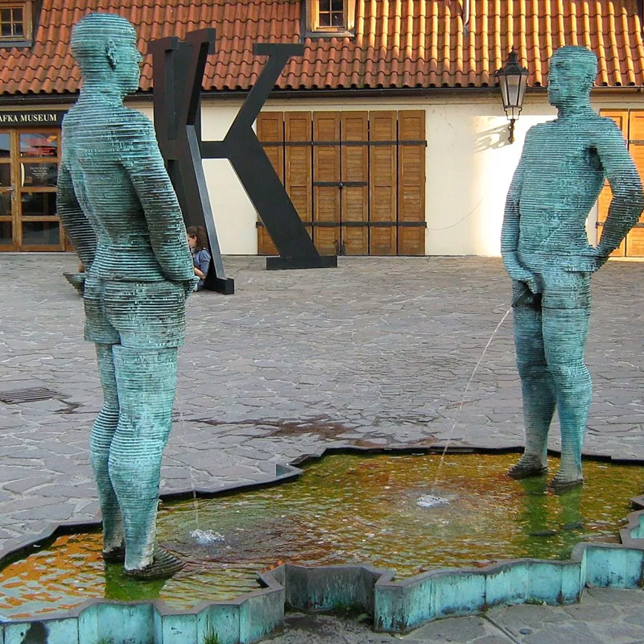

Pee for Petrol
From now on, "When Nature calls, Petrol Falls!" This won the first place at the national level, ‘Ignobles’ IIT TechFest, Mumbai, Jan 2010 for the most innovative idea and also at ‘Impulse’ NMAMIT, Nitte, March 2010 (a State Level Technical Symposium, Karnataka, India).
